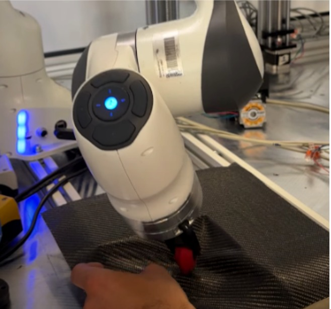
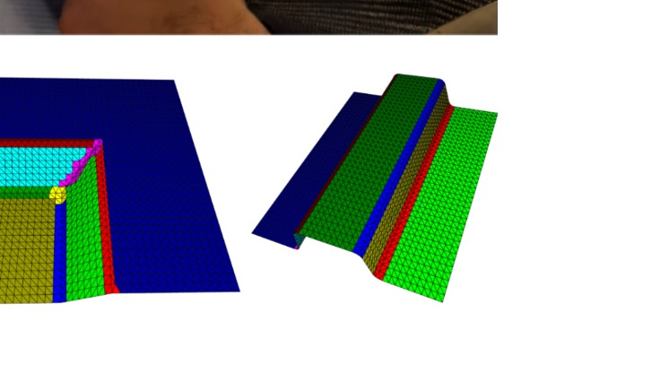
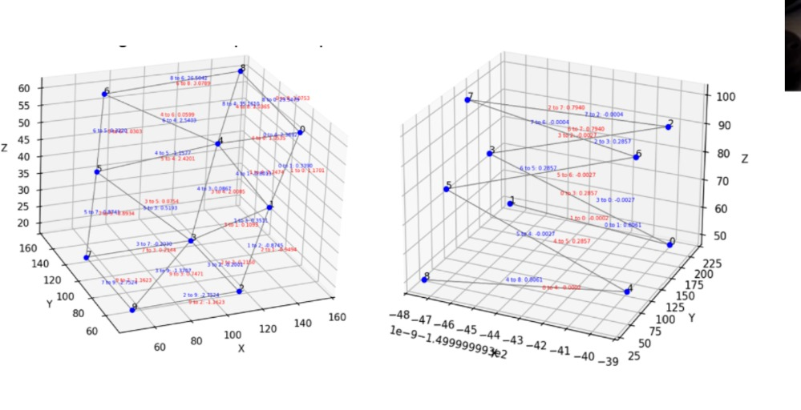
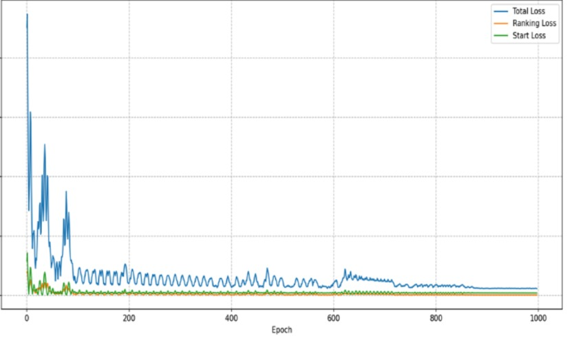
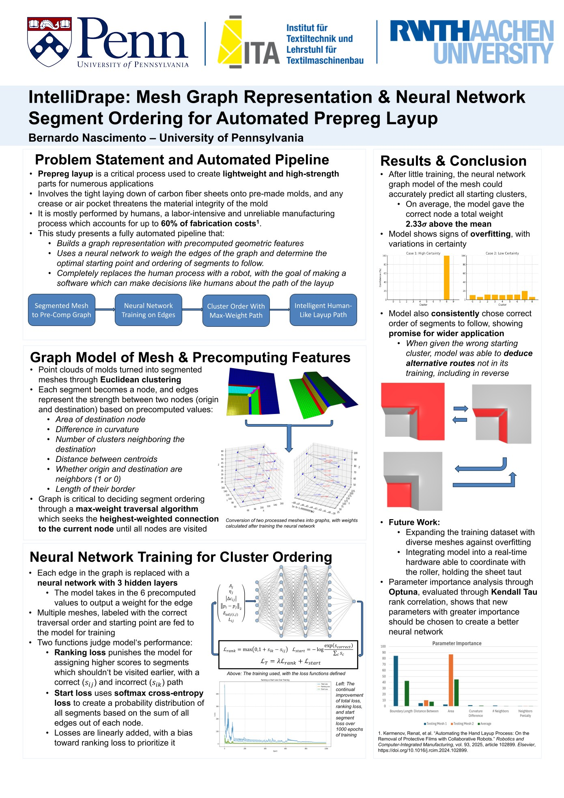

RWTH Aachen University · Robotics Research
Autonomous Carbon-Fiber Layup
At RWTH Aachen's ITA, I developed ROS software for automated carbon-fiber prepreg layup over complex molds.



Automating layup on complex molds.
The robot needed a sequence of manufacturing decisions before it could move. The software had to segment the mold, choose an order for the regions, generate tool motions, and pass the result to the robot through ROS. The process also had to account for wrinkles, gaps, surface contact, and unnecessary travel.
My contribution
- Wrote mesh-processing code to segment complex mold geometry into regions with different manufacturing needs.
- Converted those regions into a weighted graph for sequence planning.
- Trained a pairwise ranking model to score starting regions and candidate next steps.
- Wrote tool-selection and path-generation logic for flat surfaces, edges, corners, holes, and curved regions.
- Built ROS nodes, services, and interfaces for perception, planning, and robot motion.
- Developed control logic and RViz visualization for an eight-actuator mold-support system.
Mesh segmentation and geometric features.
I worked directly with triangulated meshes. Triangle centers and normals provided local shape information, and clustering plus boundary detection separated flats, bends, edges, and other regions that needed different tools or paths.
I used principal-component analysis to project each region into a local 2D frame. From that frame, I estimated dimensions, dominant directions, and a useful orientation for the layup path.
Graph-based sequence planning.
Each surface region became a graph node. I described candidate transitions with seven features: destination area, neighborhood size, flatness difference, centroid distance, neighbor penalty, shared-boundary length, and distance from the start.
The neural network compared two candidate regions at a time and assigned a score to each. The planner used those scores together with the graph connections to choose the next region.

Tool selection and path generation.
I matched each region type with a tool and path strategy. Wide flat regions received parallel passes sized to the available width. Edges and corners used single passes aligned with the dominant local axis, while small or constrained features used narrower tools.
ROS integration and adaptive mold support.
I organized the software as ROS nodes, topics, services, and actions. Point-cloud and mesh data entered the processing nodes; the planner returned a region order and tool paths; and the robot interface converted those outputs into motion commands.
I also wrote a ROS node for eight linear actuators under the mold. Each actuator used a smooth distance-based weight from the roller position to provide local support. RViz markers showed the actuator states, roller position, and mold alignment during testing.
IntelliDrape research poster.
I summarized the mesh graph, neural-ranking model, loss functions, results, limitations, and next steps in this poster for the RWTH program presentation.

Results and next steps.
By the end of the internship, I had connected the mesh-processing, ranking, path-generation, ROS, and actuator work into one prototype pipeline. The main next steps were expanding the training set, checking generalization on more mold geometries, and integrating the planner more tightly with the real-time robot system.